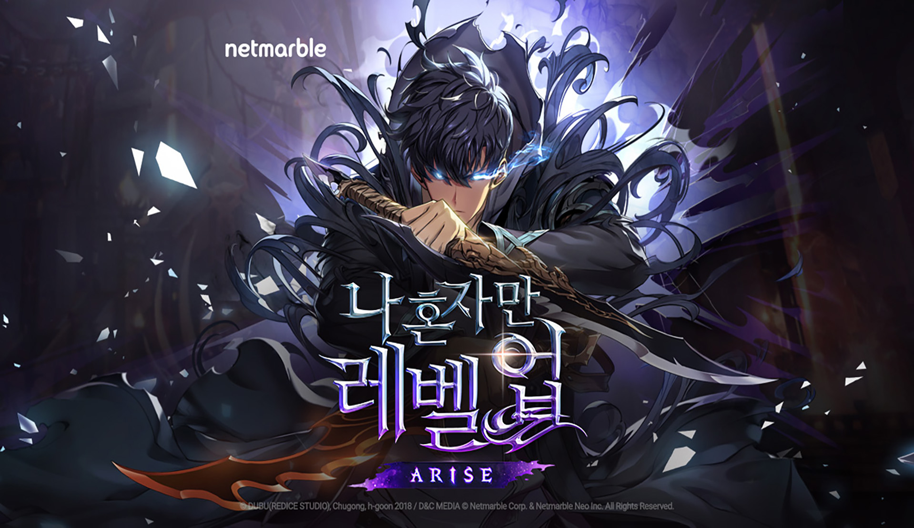
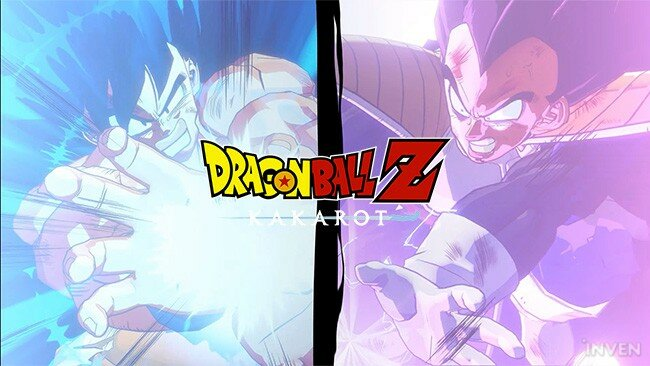
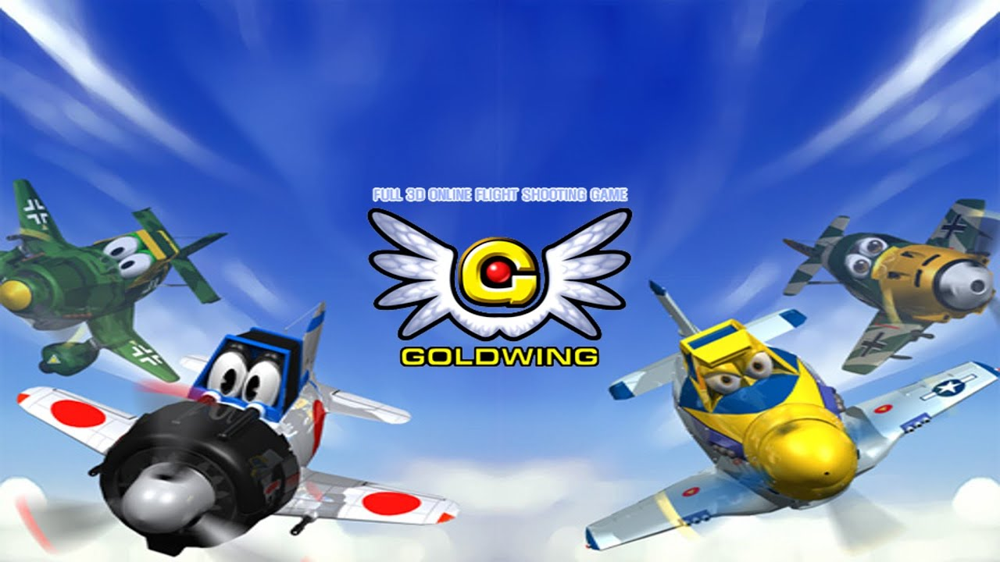
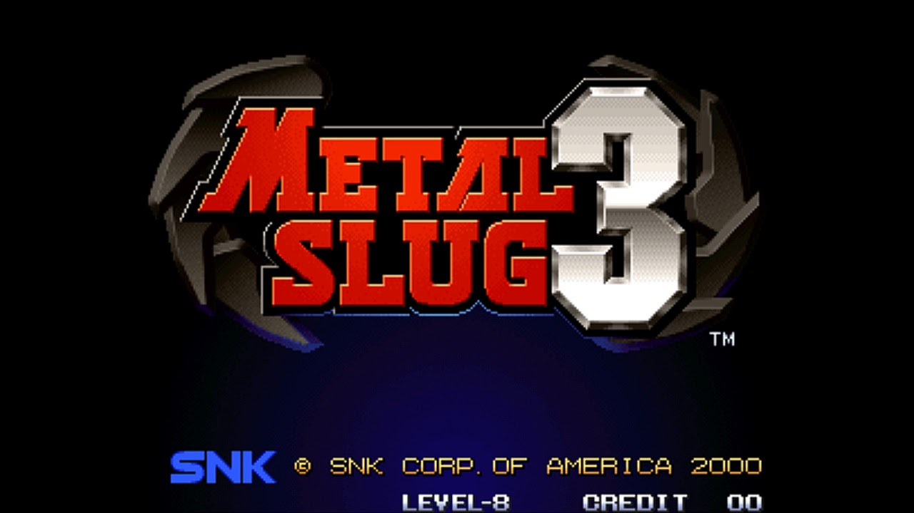

포트폴리오 (Portfolio)
나 혼자만 레벨업 : ARISE (Personal Project)
2026. 02. ~ 2026. 05.
개발 환경
C# / Unity6 / URP / HLSL / GitHub
핵심 기술 요약
- Architecture : .dll을 통한 Engine / Client 아키텍처 분할로 프레임워크 캡슐화 및 유지보수성 확보
- Behavior Tree : 상태 전이 디커플링 및 선입력 버퍼, 캔슬 로직을 통한 액션 조작감 극대화
- Action System : ScriptableObject 데이터 주도 설계 및 UniTask 비동기 기반의 단일 시간 축 스킬 파이프라인 구축
- Custom Tool : ScriptableObject 기반의 Lerp 기반 경량화 카메라·스킬 연출 툴 개발
- Graphics : RenderFeature 및 MPB 제어, HLSL 커스텀 쉐이더 작성


드래곤볼 Z : 카카로트 (Team Project)
2022. 11. ~ 2023. 01.
개발 환경
C++ / DirectX 11 / HLSL / IMGUI / JSON / GitHub
담당 파트
툴 제작 / 카메라 연출 / 이펙트
기술 상세
- 카메라 시스템 : Singleton 패턴을 활용하여 플레이어 상태에 반응하는 역동적인 카메라 연출 시스템 설계
- 시네마틱 툴 : 인게임 컷신을 위한 키프레임 기반의 선형 보간을 적용하여 부드러운 컷신과 2축 쉐이킹 연출 구현
- 파티클 최적화 : Rect Buffer Instancing 및 오브젝트 풀링을 도입하여 대량의 파티클 렌더링 성능 극대화
- 렌더링 : Distortion, Dissolve, Bloom 등 hlsl 작성 및 IMGUI 기반 툴을 사용하여 이펙트 제작
원피스 바운티 러쉬 (Personal Project)
2022. 08. ~ 2022. 10.
개발 도구
C++ / DirectX 11 / HLSL / IMGUI / JSON / GitHub
기술 상세
- 애니메이션 시스템 : 뼈 기반의 선형 보간(Lerp)을 적용해 부드러운 모션 블렌딩을 구현하고, 루트 모션(Root Motion)으로 이동의 사실감 증대
- 절두체 컬링(Frustum Culling) 알고리즘을 구현하여 시야 밖 객체 렌더링을 제외, 드로우 콜(Draw Call) 비용 절감
- 섀도우 매핑(Shadow Mapping)을 통한 실시간 그림자 처리
- FSM(유한 상태 머신) 패턴을 도입하여 몬스터의 다양한 패턴(공격, 피격, 스킬 등)을 모듈식으로 제어 및 확장성 확보
- 네비게이션 메시(NavMesh)를 구축하고 평면 방정식을 활용해 캐릭터의 정확한 Y축 높이 판정 및 이동 제한 구현

골드 윙 (Team Project)
2022. 06. ~ 2022. 07.
개발 도구
C++ / DirectX 9 / GitHub
담당 파트
최적화, 플레이어 스킬, 시네마틱 연출
기술 상세
- Core 매니저를 통해 전역 시간(Time Scale)을 제어하고, 객체별 Delta Time을 개별 연산하여 'Time Slow' 연출 구현
- Raycasting과 내적 연산을 활용해 시야각 내 최단 거리의 적을 탐색하는 와이어 타겟팅 로직 설계
메탈슬러그 (Personal Project)
2022. 04. ~ 2022. 04.
개발 도구
C++ / Windows API
기술 상세
- 추상 팩토리 패턴을 도입하여 객체(플레이어, 투사체, 이펙트) 생성 로직을 캡슐화하고 코드의 재사용성 증대
- 자유 낙하 공식을 적용하여 캐릭터의 점프 및 투사체의 곡사 포물선 운동 등 현실적인 중력 가속도 로직 구현
- 두 점을 지나는 직선의 방정식을 활용하여 경사로 및 복잡한 지형에서의 정밀한 라인 충돌 처리
